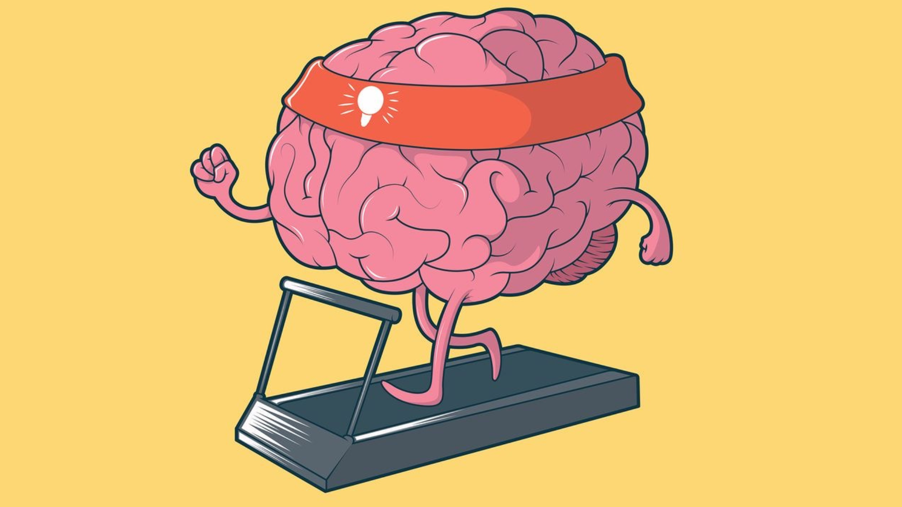

Na correria do dia a dia, cuidar da saúde mental muitas vezes fica
em segundo plano. Mas uma conversa com Vitória Beatriz, estudante
do 3º ano de Psicologia, nos lembrou que esse cuidado pode (e
deve) começar com passos simples — literalmente. Aos 21 anos,
Vitória já demonstra um olhar atento e consciente sobre os fatores
que influenciam o bem-estar emocional, especialmente o papel da
atividade física na saúde mental.
A proposta da entrevista foi justamente entender como o movimento
do corpo pode impactar a mente. Vitória explicou com clareza como
exercícios físicos vão além da estética e da saúde corporal. “A
atividade física regular ajuda na liberação de neurotransmissores
como a endorfina, serotonina e dopamina — todos ligados à sensação
de prazer, motivação e bem-estar”, afirmou.
Segundo ela, os benefícios vão desde a melhora no humor e na
qualidade do sono, até a redução de sintomas de depressão e
ansiedade. Também há ganhos significativos na autoestima e na
percepção de controle sobre a própria vida — algo essencial nos
dias atuais, quando tantas pessoas se sentem sobrecarregadas.
Um ponto interessante trazido na conversa foi a ideia de que não
existe um tipo de exercício ideal para a saúde mental. O melhor
caminho, segundo Vitória, é escolher uma atividade que a pessoa
goste. “O mais importante é manter uma regularidade e respeitar os
próprios limites”, disse.
A entrevista também abordou o desafio do sedentarismo,
especialmente entre os jovens, que muitas vezes passam horas em
frente a telas. Vitória vê esse cenário com preocupação: “O
sedentarismo não só prejudica a saúde física, mas também afeta a
cognição, o humor e a capacidade de lidar com estresse.”
Para quem quer começar e não sabe por onde, a dica da futura
psicóloga é começar pequeno: “Cinco ou dez minutos de caminhada já
é um início. O foco deve ser o cuidado com o corpo e a mente, não
a comparação com os outros.”
Mais do que trazer dados e teorias, a fala de Vitória foi um
convite à prática consciente, com escuta ao corpo e acolhimento
emocional. Como ela mesma disse: “A atividade física não substitui
a terapia, mas pode ser uma grande aliada.”
O objetivo da entrevista foi justamente esse: trazer um olhar
acessível e embasado sobre como hábitos simples podem fazer
diferença no dia a dia. E com certeza, saímos da conversa com a
motivação de dar mais atenção à nossa mente — começando pelos pés.
